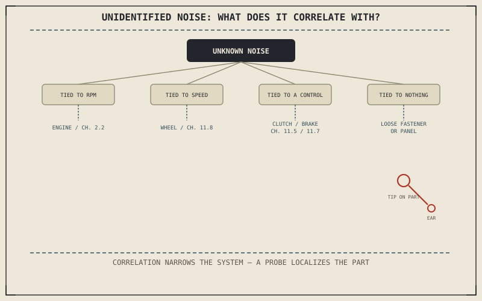

A new noise or vibration rarely announces which system it's coming from. It just arrives, somewhere behind or beneath the rider, and every chapter from 11.2 through 11.8 has already covered a specific system's specific fault symptoms in detail. What's missing is the triage step that comes before any of them: a way to narrow an unidentified noise down to a single system before reaching for that system's specific chapter.
Chapter 11.8 closed by pointing here — to noise and vibration whose source hasn't yet been narrowed to a single system. This chapter is that narrowing step.
The First Question: What Does It Correlate With?
Following Chapter 11.1's method, the fastest way to narrow an unidentified noise is to notice exactly what it tracks. A noise or vibration that rises and falls with engine RPM, independent of road speed or gear, points toward the engine or its immediately connected components — Chapter 2.2 already established that every cylinder fires once every two crankshaft rotations, which is why an engine-tied noise often has a distinctive rhythm rather than a smooth hum. A vibration tied to road speed and wheel rotation instead, regardless of engine RPM or gear selected, points back to Chapter 11.8's wheel and tyre faults. One that only appears when a specific control is used — the clutch lever, the brake lever, a particular gear — points to Chapter 11.5 or Chapter 11.7's territory instead. A noise present at all times, unrelated to RPM, speed, or any control input, usually isn't a rotating component failing at all, but something loose: a fastener, a bracket, or a body panel vibrating against the frame Chapter 4.2 described.
What a noise correlates with — engine RPM, road speed, a specific control input, or nothing at all — narrows its source to one system before you've touched a single part, and that correlation is almost always faster to establish than trying to identify the sound itself.

A diagnostic flowchart for an unidentified noise or vibration, branching on what it correlates with — engine RPM, road speed, a specific control input, or nothing at all — into the system each correlation points toward.
Localizing the Source Once the System Is Narrowed
Once a correlation test points to a specific system, physically localizing the exact component follows naturally: a long screwdriver or a mechanic's stethoscope, its tip touched to a suspected component and its handle held near the ear, conducts sound directly from that component far more clearly than it reaches the rider's ear through open air. Moving that tip between candidate components within the already-narrowed system — for instance, along different points of an engine case once RPM correlation has pointed there — pinpoints precisely where a noise is loudest, applying Chapter 11.1's confirmation step at a finer resolution than the correlation test alone can reach.
A Common Misconception, Cleared Up Early
It's a common habit to try to identify an unusual noise by how it sounds alone — "a ticking noise" or "a grinding noise" — comparing it against descriptions of specific failures from memory or elsewhere. Two completely different faults, in two completely different systems, can produce nearly identical sounds to an untrained ear, while what they correlate with almost never overlaps the same way. Starting from correlation rather than from the sound's character is the more reliable path, and it's the same list-then-test discipline Chapter 11.1 opened this entire part with.
Where This Leads
Every system this book has covered now has a diagnostic chapter behind it. Chapter 11.10 turns from diagnosis to repair, covering the basic repairs every rider should know once a cause has actually been confirmed.
Key Concepts to Remember
- What a noise or vibration correlates with — RPM, road speed, a specific control input, or nothing — narrows its source to a system faster than trying to identify the sound itself.
- A screwdriver or stethoscope touched to a suspected component conducts sound directly, pinpointing the exact source within an already-narrowed system.
- Different faults in different systems can sound nearly identical, which is why correlation, not the sound's character, should be the first thing tested.
Cross-References
| ← Ch. 11.1 | Established choosing tests that narrow a list of causes; this chapter builds a correlation test that narrows an unidentified noise to a single system. |
| ← Ch. 2.2 | Established each cylinder firing once every two crankshaft rotations; this chapter cites that rhythm as a sign of an RPM-correlated engine noise. |
| ← Ch. 4.2 | Established the frame as the structure everything else attaches to; this chapter treats a constant, correlation-free noise as something loose vibrating against it. |
| → Ch. 11.10 | Turns from diagnosis to repair, covering basic repairs every rider should know. |